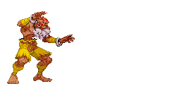

ZONER
Zoners specialize in fighting their opponents at a distance with long range attacks. This distance can span from a footsie range to a full screen range. There are a few types of zoners each with different keep-away tools. As the names suggest, normal zoners have far-reaching normal attacks, projectile-based zoners have strong projectiles, and finally the less common trap zoners leads their opponents to the traps they set up. In addition, all zoners have a knock-back move to help them escape entanglements if their opponent has closed the distance. And a strong anti-air special to catch and punish jumping opponents who try to evade their attacks.
+++++++
Toolkit
- Long range attacks
- Projectiles
- Anti-air special
- Knock-back move
Strengths
- Long reach
- Strong projectiles
- Effective anti-air special
Weaknesses
- Lacks close range attacks
- Reliance on distance
- Limited mobility
How should I play as this fighter?
Utilize your long reaching attacks and backwards movement to keep your opponents at bay. A lot of the zoner’s moves take some time to charge up, so it is crucial to predict your opponent’s moves ahead of time so you can have some foresight and use these moves effectively.
How can I beat this fighter?
Get in their face. A zoner’s toolkit usually falls short when the distance is closed. They rarely have strong short range normals or invincible reversals to escape these close range brawls.Examples
- Dhalism (Street Fighter II: The World Warrior, 1991)
- Guile (Street Fighter II: The World Warrior, 1991)
- Axel Low (Guilty Gear, 1998)